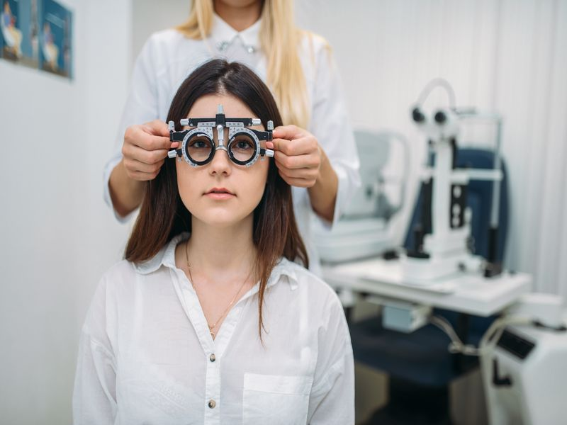
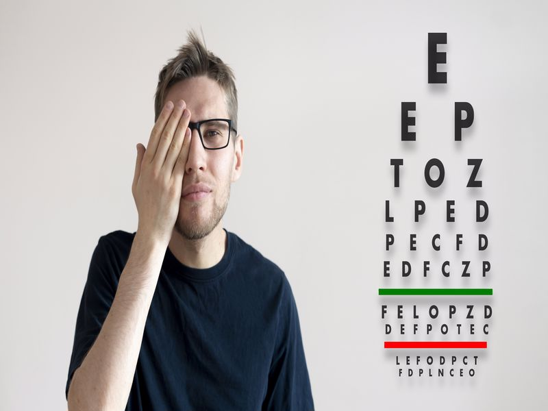
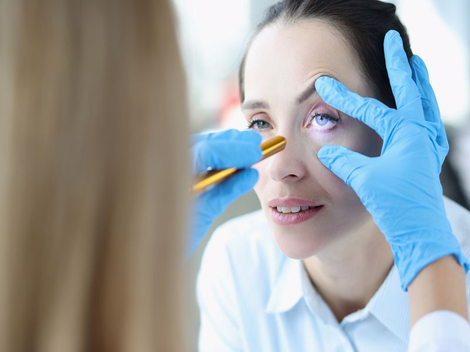
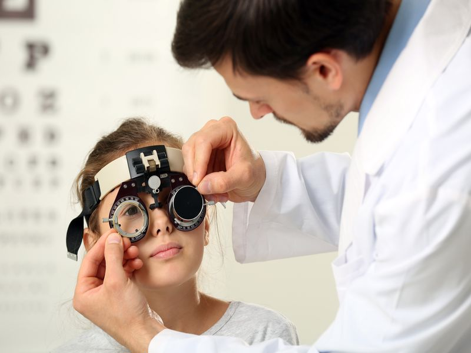

Göz muayenesi nasıl yapılır? Muayene esnasında göz detaylı bir şekilde inceleme altına alınmaktadır. Öncelikle hastanın görme düzeyi ölçülmektedir. Ardından kapaklar, konjoktiva, kornea, ön kamara, iris, lens, vitreus, retina kontrol edilmektedir. Bununla birlikte görme siniri, beyine uzanmakta olan görme yolları da olmak üzere pek çok noktaya detaylı bir şekilde bakılmaktadır. Bölgeler muayene edilerek işlevleri ölçülmektedir.
Basit bir muayene gibi görülmesine rağmen aslında çok daha detaylı bir inceleme gerçekleştirilmektedir. Hastalara detaylı bir şekilde bakılarak bir ipucu aranmakta ve teşhisleri konulmaktadır. Cihaz bağımlı bir muayene gerçekleştirilmektedir. Bölgelerin detaylı bir şekilde kontrol edilebilmesi ve işlevlerinin ölçülebilmesi için bazı cihazlara ihtiyaç duyulmaktadır.


Göz Muayenesi Nedir?
Göz muayenesi nedir? Genel anlamda gözün birden fazla bölgesinin detaylı bir şekilde incelenmesi olarak tanımlanabilmektedir. Kapsamlı bir şekilde gerçekleştirilmekte olan göz muayeneleri ortalama 30 dakika sürmektedir. Bununla birlikte muayene esnasında damla ile göz dibine de bakılmaktadır. Pek çok göz uygulaması gerçekleştirilerek herhangi bir sorun olup olmadığı kontrol edilmektedir.
Tıpta en çok cihaza bağımlı muayenelerin göz muayeneleri olduğu bilinmektedir. Modern cihazlar ile birlikte oldukça detaylı bir inceleme gerçekleştirilmekte ve ne gibi sorunların olduğu tespit edilmektedir. Böylelikle daha detaylı bir teşhis konulabilmektedir. Bunun sonucunda ise hastaya tedavi uygulanmaya başlanabilmektedir. Bazı hastalıklar hiçbir belirti vermediğinden dolayı düzenli aralıklar ile muayene yaptırılması önerilmektedir.
Göz Muayenesi Nasıl Olur?
Göz muayenesi nasıl olur? Kullanılmakta olan cihazlar ile birlikte hastaların göz numaraları tespit edilmektedir. Miyop, hipermetrop, astigmat gibi göz kusurlarının teşhisi bu cihazlar sayesinde konulabilmektedir. Göz tansiyonu, katarakt ve retina hastalıkları mutlaka kontrol edilmektedir. Bu hastalıklar gözlük tedavisi ile iyileşme göstermemektedir. Genelde erken dönemde belirti vermeyen bu hastalıklar fark edilirse hastanın tedavisine başlanmaktadır.
Muayene sırasında hastanın oldukça dikkatli hareket etmesi gerekmektedir. Gözlük denemesi esnasında dikkatli ve doğru bir şekilde kendine uygun olanı seçmesi gerekmektedir. Özellikle 45 yaşın üzerinde ise hastanın yakın görmesi de bozuk olmaktadır. Uzak numaralara ekleme yapılmakta ve yakın numara da bulunmaktadır.
Göz Muayenesi Hangi Durumlarda Yapılır?
Göz muayenesi hangi durumlarda yapılır? Gözde ağrı, bulanık görme gibi durumlar oluştuğunda göz muayenesi gerçekleştirilmektedir. Aynı zamanda uzağı veya yakını görmekte sorun yaşandığında da muayeneye başvurulmaktadır. Fakat aslında bu muayenelerin düzenli aralıklar ile gerçekleştirilmesi gerekmektedir. Bunun nedeni ise gözde oluşan bazı hastalıkların herhangi bir belirti vermemesinden ve sinsi bir şekilde ilerlememesinden kaynaklanmaktadır.
Gizli bir şekilde ortaya çıkmakta olan hastalıklar nedeniyle ilerde büyük sorunlar yaşanabilmektedir. Bundan dolayı da erken tedavi büyük bir öneme sahiptir. Muayene gerçekleştirilmesi gereken zamanlar şu şekilde sıralanmaktadır:
- Doğum sonrası ilk yıl
- 3 yaşında
- 6-7 yaşında
- 10 ile 40 yaş arasında 5 yılda bir
- 40 ile 50 yaş arasında 2 yılda bir
- 50 yaş sonrasında yılda bir


Göz Muayenesi Fiyatları
Göz muayenesi fiyatları hastaya yapılacak olan muayenenin detaylarına bağlı olarak değişim gösterebilmektedir. Öncelikle hastanın şikayetleri ve istekleri dinlenmektedir. Ardından bazı cihazlar ile birlikte hastanın durumu detaylı olarak kontrol edilmektedir. Göz oldukça ayrıntılı bir şekilde incelendiğinden dolayı bir hastalık var ise tespiti gerçekleştirilmektedir.
Muayenelerin mutlaka düzenli aralıklar ile gerçekleştirilmesine önem verilmesi gerekmektedir. Erken dönemde hiçbir belirti vermeyen ve ilerlemeye devam eden hastalıklar daha sonra kalıcı görme kaybına neden olabilmektedir. Böyle bir durumun oluşmaması için mutlaka göz kontrollerine düzenli olarak gidilmesi ve gözlerin kontrol ettirilmesi gerekmektedir.